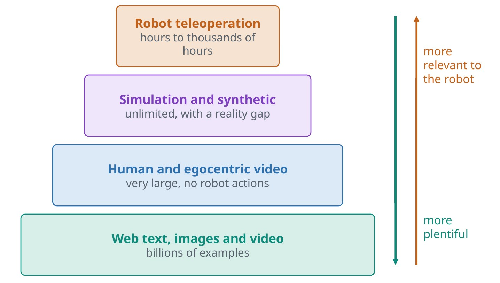
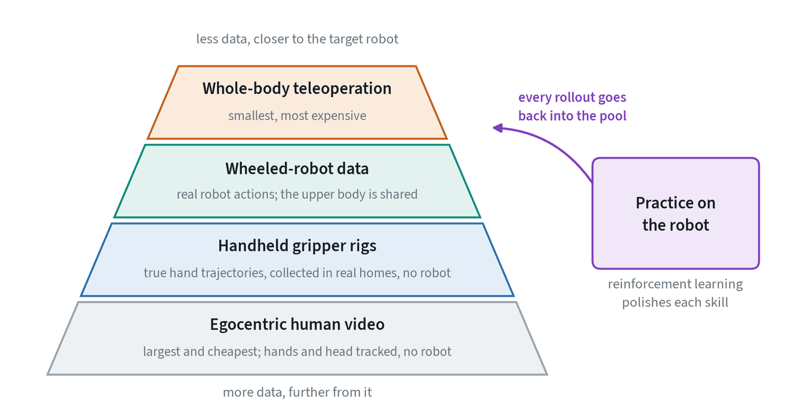
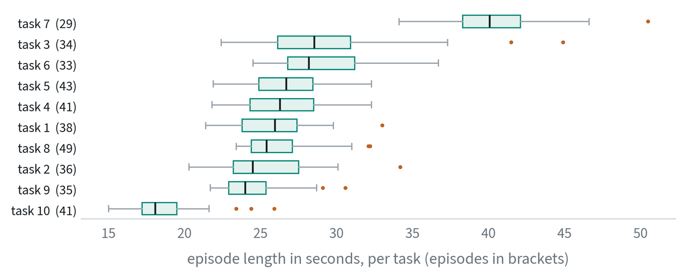
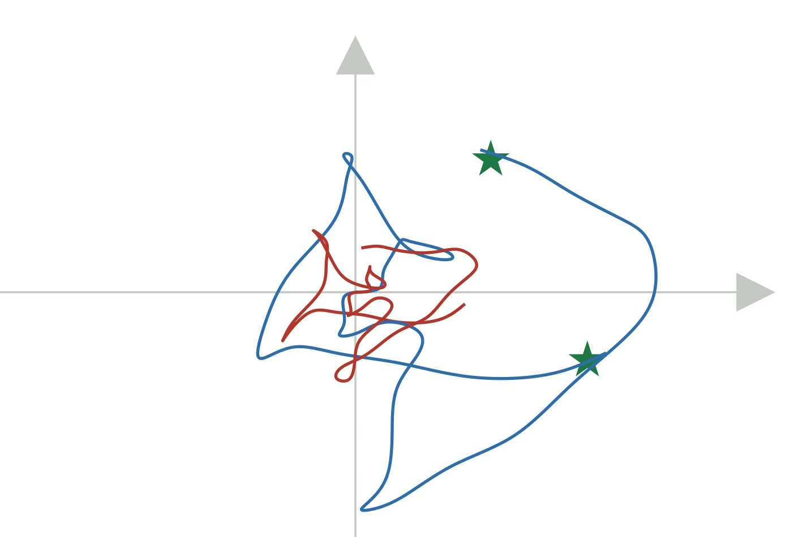
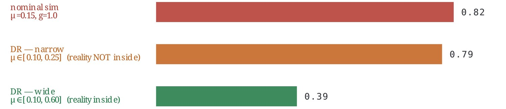
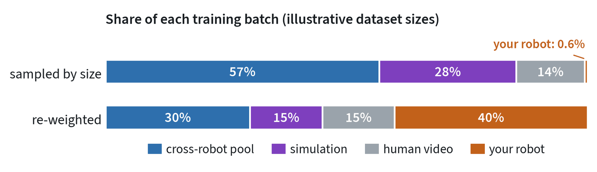

The data pyramid
Language models had the web. Robotics has no equivalent record of robot actions, so models are built from layers of different data.


Web data teaches language, objects and common sense, with no actions. Human video shows how tasks are done by hands, but the actions have to be inferred. Simulation and synthetic data have perfect labels and unlimited scale, but they differ from reality. Teleoperation is exactly the right data, the robot’s own sensors and actions, and it is slow and costly to collect.
Every current system is an answer to the question of how to combine these layers: use the cheap ones to learn about the world, and the expensive one to learn how to act.
The pyramid for a humanoid
The four layers above are the general picture. A company building a humanoid ends up with a more specific stack, chosen by one question: how close is this data to the robot we ship, and what does an hour of it cost?


| Source | What it provides | What it lacks |
|---|---|---|
| Egocentric human video | Volume and variety. Open datasets with fitted hand models are enough to prototype with; licensed collections with tracked hands and head pose are bought for specific gaps. | Robot actions, forces, and the robot’s own view |
| Handheld gripper rigs | True hand trajectories and the robot’s own gripper and camera, collected in real homes with no robot present | The arm and body: whether the robot could have reached that way |
| Wheeled-robot data | Real robot actions for manipulation. A wheeled base with the same arms shares the upper body and its kinematics, so the data carries over. | Walking, balance, and anything that needs the legs |
| Whole-body teleoperation | Exactly the right data: the full robot, in the task | Scale. It is the slowest and most expensive, so it is kept for skills only a biped has, and for recovery. |
| Practice on the robot | Reinforcement learning polishes each skill past what was demonstrated, and every rollout is added to the pretraining pool | A starting policy good enough to practise safely |
The design principle is to push every skill as far down the pyramid as it will go, and to spend the expensive layers only on what the cheap ones cannot teach.
Collecting demonstrations
- Leader-follower arms. The operator moves a small copy of the arm and the robot mirrors it. This made two-arm data collection cheap.
- VR headsets and controllers. These track the operator’s hands.
- Handheld grippers. People collect manipulation data with no robot present at all.
- Exoskeletons and gloves. Used for humanoids and dexterous hands.
You will meet a handful of public collections again and again. Open X-Embodiment pools data from many labs and robots. DROID uses one arm setup across many buildings and scenes. LIBERO and similar suites are simulated benchmarks. Data is usually stored in the LeRobot format or in RLDS; each records observations, actions, timestamps and the task description. Converting between them is a routine chore, and a large share of the bugs on a robot learning project live in that plumbing.
What a real dataset contains


It helps to see one dataset concretely. This one holds 379 demonstrations, between 29 and 49 per task, and 101,469 frames at 10 per second. In total it is 2.8 hours of robot time. Episodes last from 15 to 50 seconds with a median of 26.
| Field | Shape | Content |
|---|---|---|
| Scene camera | 256 × 256 × 3, stored as video | A fixed view of the workspace |
| Wrist camera | 256 × 256 × 3, stored as video | The view from the gripper |
| State | 8 numbers | Hand position (3), hand orientation (3), two gripper finger positions |
| Action | 7 numbers | Change in hand position (3), change in orientation (3), gripper open or close |
| Task | Text | The instruction, one per episode |
| Timestamp, frame and episode index | Numbers | What lets streams be aligned and episodes separated |
Three hours is small. It is also typical of what one lab collects for one study, and it shows the scale problem directly: a language model is trained on text that would take a person tens of thousands of years to read, and a robot benchmark on an afternoon’s work.
| Dataset | Scale, as reported by its authors | What it is for |
|---|---|---|
| LIBERO | 130 tasks in simulation, in four suites | Comparing methods under identical conditions |
| Open X-Embodiment | Data from 22 robots, pooled across 21 institutions, covering 527 skills | Pretraining generalist policies across robots |
| DROID | About 76,000 trajectories, 350 hours, in 564 scenes | Variety of real scenes with one robot setup |
The storage format matters more than it should. Images are stored as compressed video, because raw frames would be hundreds of times larger, and that means a training loader must decode video quickly and return exactly the frame that matches each action. Timestamps, not frame counts, are the reference. A loader that is off by one frame trains a policy on actions that belong to the neighbouring image, a bug that lowers success without raising any error.
Simulation and the reality gap
Simulated data is cheap and perfectly labelled, yet a policy trained only in simulation often fails on the real robot. Rendered images look different from camera images, simulated contact and friction are approximations, and real sensors have delay and noise.


Domain randomisation is the standard response. Vary lighting, textures, masses and friction during training so that reality looks like one more variation.



It works well for locomotion and less well for manipulation that depends on contact.
Turning human video into robot data
People have recorded far more manipulation than robots have. Three routes turn that into training data.
- Track the hand and retarget. Estimate the hand’s pose in each frame and convert it to a gripper pose. This works best with head-mounted or wrist-mounted cameras that see what a robot would see.
- Infer actions with a model. Label the video with an inverse dynamics model or with latent actions. The world models note shows both.
- Train on the video as video. Use it to pretrain the visual and predictive parts of the model, and learn actions from robot data alone.
What is lost in every case is force, and the difference between a hand and a gripper. Human video is strongest for teaching what to do and where, and weakest for how hard to press.
Mixing datasets
Training on several datasets at once raises a question that single-dataset training never asks: how often should each one be sampled?


Sampled in proportion to size, the robot you care about almost never appears, and the model learns everyone else’s. The usual fix is to set the mixture by hand so that the target data is a large share of every batch while the broad data still provides variety. Two further points matter as much as the weights. Normalise each dataset with its own statistics. And agree on one action convention, or tell the model which one each sample uses.
Language labels and generated variations
The instruction attached to each episode is training data too. One fixed sentence per task teaches the model that sentence. Short, vague or wrong labels teach it to ignore language. Useful practice is to write several phrasings for each task, to label sub-tasks inside long episodes, and to check a sample by eye. Vision-language models are now used to write and to check these labels at scale.
Existing demonstrations can also be multiplied. In simulation, a handful of demonstrations can be transformed to new object positions and replayed to produce thousands. On real data, generative models can change backgrounds, lighting and distractor objects while the motion stays the same. Both add visual and spatial variety. Neither adds a behaviour that was not demonstrated.
Digital twins
A digital twin is a simulated copy of a specific real robot and workspace, matched closely enough that a result in one predicts the result in the other. It differs from ordinary simulation in being tied to one real setup and checked against it.
Twins earn their cost in three ways. Methods can be developed and debugged in the twin before they touch hardware, which is how reinforcement learning procedures are usually worked out. A candidate policy can be screened in the twin so that only promising ones use robot time. And the same starting conditions can be re-run exactly, which real hardware never allows.
A twin does not replace training on the real robot where contact matters. A common pattern is to train walking in simulation, where it transfers well, to develop the manipulation learning procedure in a twin, and to run the final manipulation learning on real hardware.
Common mistakes
- Counting hours. A hundred varied, clean hours can beat a thousand repetitive ones.
- Trusting labels. Task descriptions attached to the wrong episodes are common in pooled datasets.
- Randomising blindly. If the real value lies outside the randomised range, randomisation does not help.
Terms
- Teleoperation
- A person controlling the robot to record demonstrations.
- Embodiment
- A particular robot body.
- Sim-to-real
- Moving a policy from simulation to hardware.
- Episode
- One recorded attempt at a task.
- Retargeting
- Converting a human hand’s motion into the motion of a robot gripper.
- Sampling weight
- How often a dataset is drawn from when several are mixed.
- Curation
- Checking, scoring, filtering and labelling a dataset before training on it.
- Ablation
- Removing one thing and measuring the difference, to learn what it contributed.
- Digital twin
- A simulated copy of one specific real robot and workspace, validated against it.
- Egocentric video
- Video recorded from the wearer’s own point of view.
- Episode
- One recorded attempt at a task, from start to finish.
- Trajectory
- The sequence of observations and actions in an episode.
Further reading
- Open X-Embodiment Collaboration, 2023. Robotic Learning Datasets and RT-X Models.
- Khazatsky et al., 2024. DROID: A Large-Scale In-The-Wild Robot Manipulation Dataset.
- Chi et al., 2024. Universal Manipulation Interface.
- Tobin et al., 2017. Domain Randomization for Transferring Deep Neural Networks from Simulation to the Real World.
- Kareer et al., 2024. EgoMimic: Scaling Imitation Learning via Egocentric Video.
- Mandlekar et al., 2023. MimicGen: A Data Generation System for Scalable Robot Learning using Human Demonstrations.
- Romero et al., 2017. Embodied Hands: Modeling and Capturing Hands and Bodies Together (the MANO hand model).